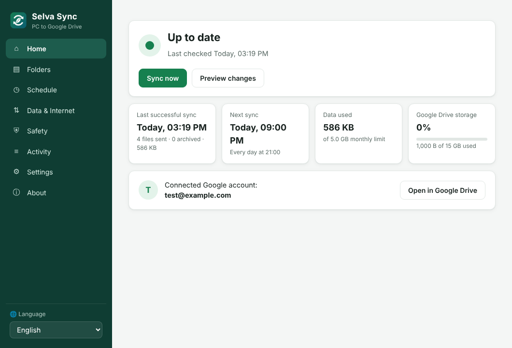
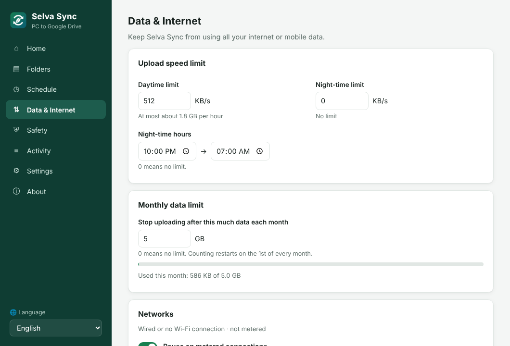
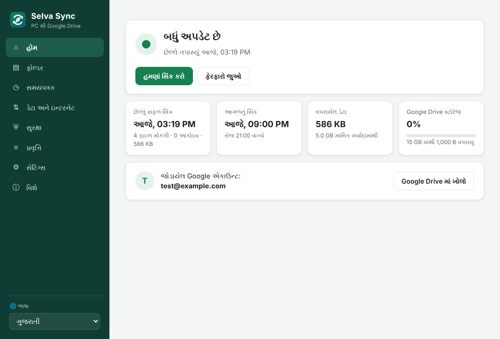

Your PC folders, safely mirrored to Google Drive
Selva Sync is a free Windows app that backs up the folders or whole drives you choose to your own Google Drive, on your schedule. It uses no extra disk space, and it stays within your internet data limits.
Download for Windows View source codeFree and open source (MIT licence) · Windows 10 and 11 · About 8 MB · No registration

Why Selva Sync
No extra disk space
Files are read where they are and sent straight to Drive. Nothing is copied on your computer.
Only what changed
New and changed files are uploaded. Renamed or moved files are moved on Drive without uploading again.
Your schedule
Daily, weekly, every few hours or only when you click. If the PC was off, it catches up later.
Saves internet data
Day and night speed limits, a monthly data limit, and an automatic pause on mobile data and hotspots.
Protects against mistakes
Deleted files go to a dated Archive on Drive and are kept for as many days as you choose.
One folder you choose
Back up into any folder in My Drive or a shared drive. If it ever disappears, Selva Sync stops and tells you instead of saving elsewhere.
Never forgotten
The tray icon turns red if there has been no backup for a few days, and a monthly report is saved on Drive.
Ready for offices
One setup file gives every PC the same settings and can lock the ones staff shouldn't change.
Private by design
No servers, no accounts with us, no tracking. Selva Sync can only see the Drive files it creates.
How it works
- Install. Download and run SelvaSync.exe. It installs for your Windows user. No administrator rights are needed.
- Connect Google Drive. Sign in with Google and allow access. Selva Sync only gets permission for the files and folders it creates itself.
- Choose folders and a schedule. Pick folders or whole drives (C:, D:, USB). Windows system folders on C: are skipped automatically.
- That's it. Selva Sync waits quietly near the clock and keeps your Drive copy up to date in My Drive › Selva Sync › your computer name.
Screenshots


Available in English, हिन्दी, ગુજરાતી, मराठी, தமிழ், বাংলা, Español, Français and Português. Anyone can add a language by translating one text file.
Why “Selva”?
Short answer: it's my name. Long answer: it's still my name, but with better excuses.
🌿 In Tamil, selvam means wealth, treasure. And your files are exactly that: twenty years of photos, the report you rewrote nine times, and that one Excel sheet nobody else understands.
🌳 In Spanish, Portuguese and Italian, selva means forest, jungle.
So Selva Sync takes your treasure and hides it safely in the forest of the cloud, where only you can find it. Think of it as a very polite squirrel that buries your files every night and, unlike real squirrels, never forgets where.
Yes, I named a backup app after myself. In my defence, “Treasure Forest Squirrel Sync” didn't fit on the icon.
Co-developed with Claude (AI by Anthropic). I brought the problem, the chai and the name; Claude brought the code and the patience. ☕